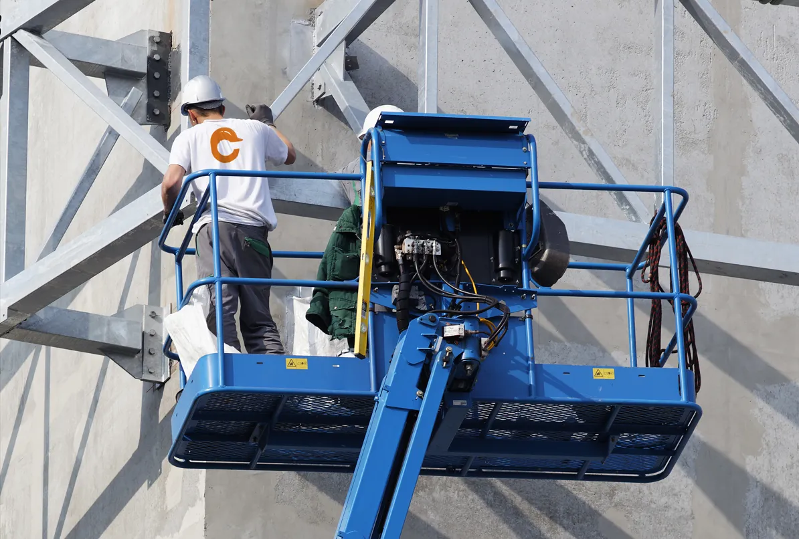
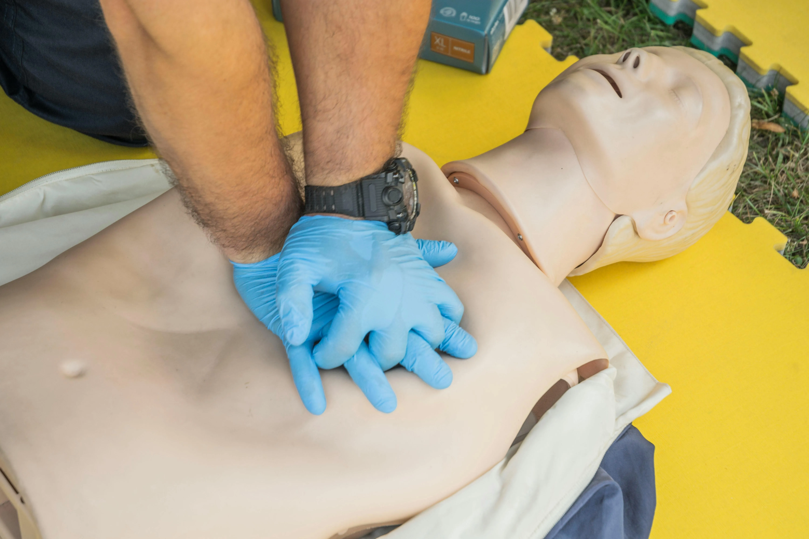

Corsi di Formazione
Offriamo una vasta gamma di corsi di formazione per la sicurezza sul lavoro, conformi alle normative vigenti.
Ponteggi
Antincendio

Carrelli Elevatori
DPI 3° Categoria
Formazione Dirigenti
Formazione Lavoratori
Lavori in Quota
Corso HACCP
Macchine Movimento Terra

Piattaforme di Lavoro Elevabili
Preposto

Primo Soccorso
RLS
RSPP